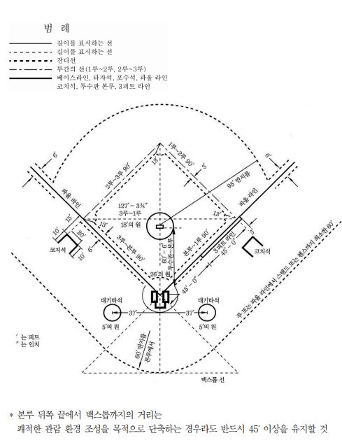

경기장 규칙

경기장 구획선1 * 본루 뒤쪽 끝에서 백스톱까지의 거리는
쾌적한 관람 환경 조성을 목적으로 단축하는 경우라도 반드시 45′ 이상을 유지할 것
 경기장 구획선2
경기장 구획선2
 경기장 구획선3
경기장 구획선3
투수판의 전방 6인치(15.2cm)의 부분에서부터 본루를 향해 6피트(1.829m)의 부분까지의
경사는 1피트당 1인치어야한다. 이 경사는 모든 구장이 동일해야 한다. 투수의 마운드, 즉 직경
18피트(5.486m)의 원은 본루에서 59피트(17.983m)의 지점을 중심으로 한다.
마운드의 중심에서 18인치(45.7cm) 후방에 투수판의 앞쪽 가장자리를 놓는다. 투수판의 앞쪽
가장자리는 본루 끝점에서부터 60피트 6인치(18.44m)의 부분에 놓는다.
경사는 투수판의 앞쪽 가장자리의 6인치 전방에서부터 시작된다. 투수판 전방 6인치의 경사
시작 부분에서 6피트의 부분까지의 경사는 6인치이며, 이것은 모든 구장이 동일해야 한다.
투수판 주위의 평평한 곳은 투수판의 전면 6인치, 측면이 각 18인치, 후방이 22인치(55.9cm)
이다.
평평한 구역은 가로 5피트(1.524m), 세로 34인치(86.4cm)이다.